(Joe DeVincentis)
1. An n-fold blackout puzzle is a string of digits and operations with the property that for each 1≤k≤n, there is a unique way to remove k symbols to leave a true mathematical statement. What is the shortest n-fold blackout puzzle for various values of n? For which n can you prove that n-fold blackout puzzles exist? (These are related to the blackout puzzles here.)
2. An n-fold number link is a connected planar graph with n vertices which are either triangles, squares, pentagons, or hexagons. A number link forms a valid number link puzzle if a the digits 1-n can be inserted into the shapes in a unique way so a way that:
1) numbers in triangles are the first digit of the product of neighboring vertices,
2) numbers in squares are the last digit of the product of neighboring vertices,
3) numbers in pentagons are the first digit of the sum of neighboring vertices, and
4) numbers in hexagons are the last digit of the sum of neighboring vertices.
(These are related to the number link puzzles here.) Are there any 9-fold number link puzzles? Are there any other n-fold number link puzzles for other n?
3. An n-fold planar balance puzzle is a collection of fulcrums on a square grid so that there is a unique way to insert the digits 1-n into some of the squares so that:
1) no row or column contains exactly one digit,
2) every row or column that contains 2 or more digits contains exactly one fulcrum,
3) each fulcrum is used horizontally or vertically, but not both, and
4) each fulcrum is located where those weights would balance, with equal torques on both sides.
(You can see some examples of planar balance puzzles here.) What are the smallest n-fold planar balance puzzles for larger n?
1.
Here are the shortest known n-fold blackout puzzles.
n=2
Bojan Basic |
n=3
Bojan Basic |
n=4
Bojan Basic |
n=5
Bojan Basic |
n=6
Bojan Basic |
n=7
Bojan Basic |
n=8
Bojan Basic |
n=9
Bojan Basic |
n=10
Bojan Basic |
n=11
Bojan Basic |
n=12
Bojan Basic |
Joe Devincentis showed that all the 1-fold through 6-fold number link puzzles, aside from trivial changes between hexagons and pentagons, and connections with 1, have been found.
Giovanni Resta said his program found many solutions for n=7, 8, 9, and 10. He only sent a sample. Are there any other 7-fold number link puzzles?
| 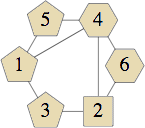 |  (Joe DeVincentis) |
| 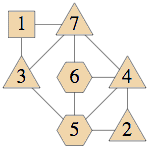 (Bryce Herdt) | 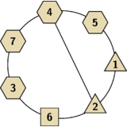 (Giovanni Resta) | 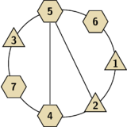 (Giovanni Resta) | 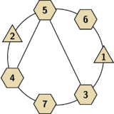 (Giovanni Resta) |
| 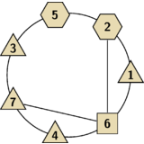 (Giovanni Resta) | 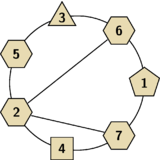 (Giovanni Resta) | 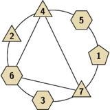 (Giovanni Resta) | 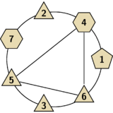 (Giovanni Resta) |
| 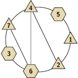 (Giovanni Resta) | 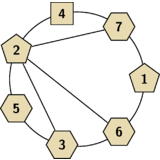 (Giovanni Resta) | 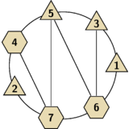 (Giovanni Resta) |
Here are the smallest known n-fold planar Balance Puzzles:
| n=4 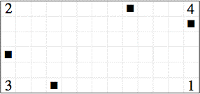 | n=6 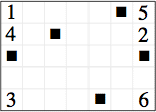 (Bryce Herdt) |
| n=7 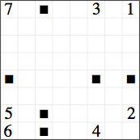 | n=8 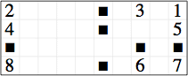 | n=9 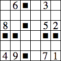 |
If you can extend any of these results, please e-mail me. Click here to go back to Math Magic. Last updated 9/25/10.